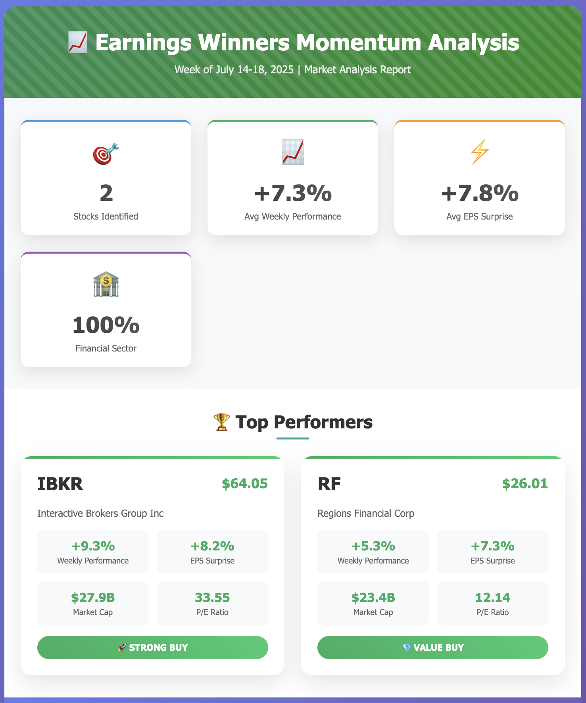

How I Automated Stock Screening with AI and Finviz: A Game-Changer for Traders
Published: January 19, 2025 Author: TraderMonty | 10 years trading US stocks Reading Time: 8 minutes
Save Hours on Stock Screening While Finding Better Trading Opportunities
If you're like me, you've probably found yourself spending way too many hours staring at stock screeners, tweaking filters, and hunting for that perfect trade setup. Well, I've got some good news that might just change how you approach your trading and investing.
Recently, I've been diving deep into AI tools—not just for work, but for everything. Heck, I even use AI to help plan my Lhasa Apso's grooming schedule these days. And that got me thinking: why not leverage this technology for something I spend a ton of time on anyway—stock screening?
What you'll discover in this guide:
How to connect AI with Finviz for automated screening
Real examples of AI-powered stock analysis that save hours
Let's be honest here. If you're serious about trading, you know the drill:
Wake up early (or stay up late for pre-market)
Fire up Finviz or your screener of choice
Manually adjust dozens of filters
Scan through hundreds of tickers
Cross-reference with news and earnings
Rinse and repeat
I've been a Finviz® Elite subscriber for years, and while it's an incredible tool, I kept thinking there had to be a better way. That's when I decided to connect my favorite screening platform with AI.
What Happens When AI Meets Stock Screening?
Picture this: Instead of clicking through multiple dropdowns and filters, you just tell AI what you want in plain English:
"Hey, find me stocks that beat earnings last week and are showing strong momentum"
Or maybe:
"Show me dividend growers trading at reasonable valuations with positive analyst sentiment"
The AI handles all the technical filtering and presents you with a clean, organized report. No more manual grunt work—just pure analysis and decision-making.
How I Built the Solution
Here's where my background comes in handy. I spent years as a software engineering PM, but like many of us, I drifted away from hands-on coding as I moved up the ladder. Recently, with the "Vibe Coding" movement (where developers code alongside AI for fun and productivity), I decided to dust off my programming skills.
What's an MCP Server?
With Claude as my coding partner, I built an MCP (Model Context Protocol) server.
In simple terms: MCP is like a universal adapter that lets AI assistants communicate with any application—in this case, Finviz®.
Think of it this way: Remember when USB became the standard for connecting devices? Before that, every printer needed its own special cable. MCP does the same thing for AI—it creates a standard way for AI to talk to different tools.
For the technical folks, here's what happens under the hood:
User Query → AI → MCP Server → Finviz API → Formatted Results
Let me show you what this looks like in action. These aren't mockups—this is exactly how I screen stocks now, every single day.
Example 1: Weekly Earnings Analysis
My prompt:"Find me stocks that beat earnings last week and are showing strong momentum"
What the AI delivered:
Multi-step analysis combining earnings_winners_screener and fundamentals data
Financial sector dominated with 100% representation among top performers
Average weekly performance of +7.3% and EPS surprise of +7.8%
Professional methodology with clear screening criteria and BUY ratings
Watch how AI automatically screens for earnings winners using the Finviz MCP Server (2x speed demo)

Professional report highlighting Financial sector dominance: IBKR with +9.3% weekly gain and +8.2% EPS surprise
Time saved: What normally takes me 45 minutes of manual screening now takes 30 seconds.
Example 2: Trend and Money Flow Analysis
My prompt:"Show me where the smart money is flowing—specifically, highlight stocks in strong uptrends with rising volume, as well as sectors and industries showing clear momentum."
What the AI found:
650 stocks in confirmed technical uptrends with broad market strength
56 stocks with significant volume surges (1.5x+ normal volume)
Clear sector rotation: Utilities (+1.58%) and Consumer Cyclical (+0.82%) leading
Technology maintaining dominance with $24T market cap despite consolidation
Watch AI analyze market momentum and smart money flows in real-time (2x speed demo)
Relative paths: Use absolute paths for reliability
Test it out:
Ask Claude: "Find me the top 5 dividend stocks under $50"
Pro tip: Start simple. Master basic queries before trying complex multi-factor screens.
What's Next for AI-Powered Trading?
Right now, the tool focuses on screening and analysis, but I'm already working on:
Automated trade execution (with proper safeguards, of course)
Portfolio rebalancing suggestions based on market conditions
Correlation analysis between news events and price movements
Custom alert systems that understand context, not just price levels
The Bottom Line
We're at an inflection point. AI isn't just a buzzword anymore—it's a practical tool that gives individual traders capabilities that were once exclusive to hedge funds.
What this means for you:
Save 5+ hours per week on manual screening
Spot opportunities faster with AI pattern recognition
Remove emotional bias from your analysis
Scale your research across thousands of stocks
The combination of Finviz®'s data and AI's analytical power is genuinely game-changing.
Share your results - Tag me @monty_investor with your wins
About the Author
TraderMonty is a former software engineering PM who's been trading US stocks for 10 years. After years in tech leadership, he recently jumped back into hands-on coding thanks to the Vibe Coding movement. Based in California, he combines his PM experience, renewed coding passion, and deep market knowledge to build tools that make trading more efficient. When not analyzing charts or coding with AI, you'll find him hiking with his Lhasa Apso or working on his latest trading automation project.
Legal Notice: This content is for educational purposes only. Trading involves substantial risk of loss. Past performance doesn't guarantee future results. Always do your own research. Finviz® is a registered trademark of Finviz Inc. Anthropic® and Claude® are trademarks of Anthropic, PBC. This project is not affiliated with or endorsed by these companies.